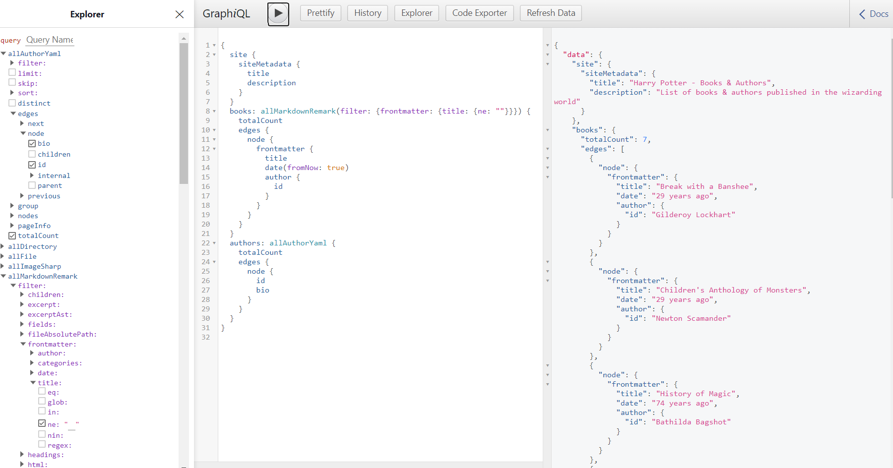

GraphQL lets you ask for the exact data you need. Queries look like JSON:
{
site {
siteMetadata {
title
}
}
}
Which returns this:
{
"site": {
"siteMetadata": {
"title": "A Gatsby site!"
}
}
}
To View GraphiQL, an in-browser IDE, to explore your site's data and schema go to http://localhost:8000/___graphql

npm install -g gatsby-cli
npm init gatsby
cd hello-world
gatsby develop
gatsby new [SITE_DIRECTORY_NAME] [URL_OF_STARTER_GITHUB_REPO]
Gatsby was built to be extensible and flexible — using plugins is one way to make it so. They can be directly installed and be used for a variety of functionality including making the site offline, adding Google analytics, adding support for inline SVGs, you name it — the list is almost endless.
Go to see all availible plaguns to Gatsby plugin library